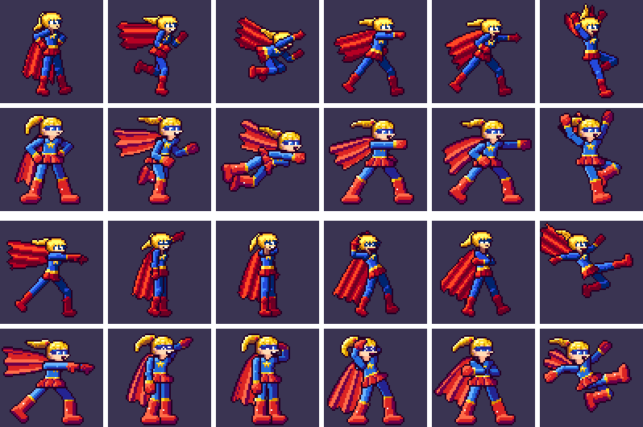
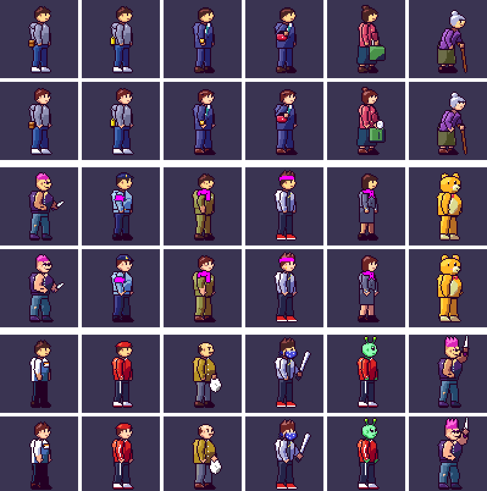
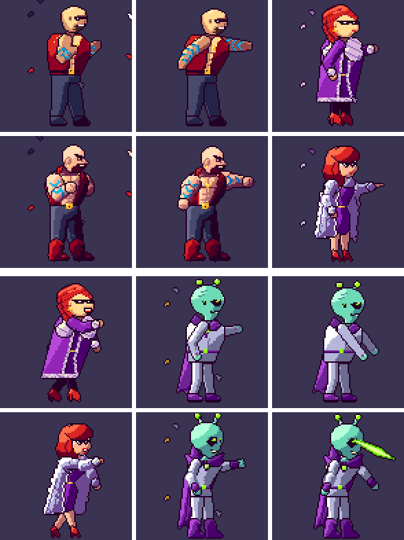
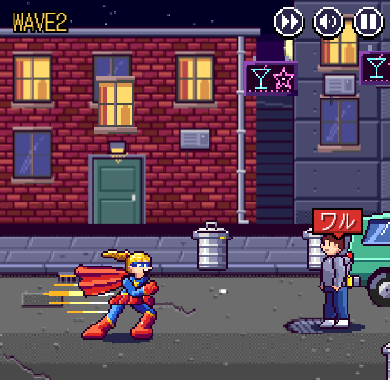
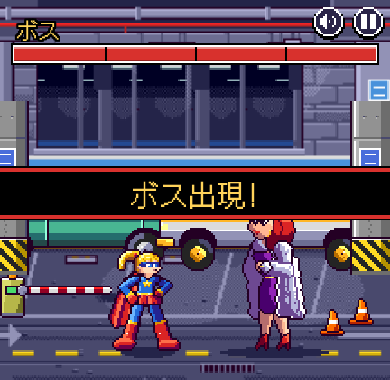
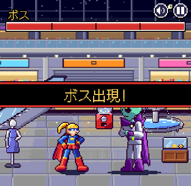
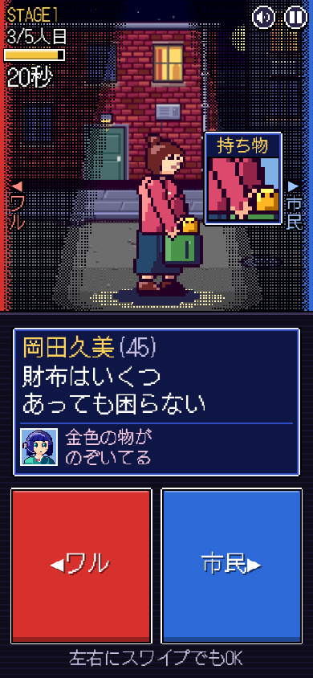

<title>描き直しの見比べ</title>
<style>
@import url('https://fonts.googleapis.com/css2?family=DotGothic16&family=M+PLUS+1p:wght@400;700&display=swap');
:root{
  --bg:#f3f1f7; --ink:#1f1a2b; --sub:#5d5670; --line:#d9d4e5; --panel:#3a3452; --acc:#d6392b; --chip:#e7e3f0;
}
@media (prefers-color-scheme: dark){:root:not([data-theme="light"]){
  --bg:#17141f; --ink:#ece8f4; --sub:#a7a0b8; --line:#322c42; --panel:#3a3452; --acc:#ff6a55; --chip:#262035; color-scheme:dark;}}
:root[data-theme="dark"]{--bg:#17141f; --ink:#ece8f4; --sub:#a7a0b8; --line:#322c42; --panel:#3a3452; --acc:#ff6a55; --chip:#262035; color-scheme:dark;}
body{background:var(--bg);color:var(--ink);font-family:"M PLUS 1p",system-ui,sans-serif;line-height:1.75;padding-inline:16px;padding-block:24px 48px}
main{max-width:860px;margin:0 auto;display:grid;gap:40px}
h1{font-family:"DotGothic16",monospace;font-size:clamp(26px,6vw,38px);line-height:1.2;margin:0;text-wrap:balance}
h2{font-family:"DotGothic16",monospace;font-size:22px;margin:0;text-wrap:balance}
p{margin:0;max-width:65ch}
section{display:grid;gap:12px}
.lead{color:var(--sub)}
.pix{image-rendering:pixelated;background:var(--panel);border-radius:6px;padding:8px;display:block;max-width:100%;height:auto}
.scroll{overflow-x:auto}
.legend{display:flex;gap:8px;flex-wrap:wrap;font-size:13px}
.legend span{background:var(--chip);border-radius:99px;padding:2px 10px}
.shots{display:grid;grid-template-columns:repeat(auto-fit,minmax(240px,1fr));gap:12px}
figure{margin:0;display:grid;gap:6px}
figcaption{font-size:13px;color:var(--sub)}
.shots img{width:100%;height:auto;image-rendering:pixelated;border-radius:6px}
ul{margin:0;padding-left:1.2em;max-width:65ch}
li+li{margin-top:4px}
.note{border-left:3px solid var(--acc);padding-left:12px}
</style>
<main>
<header style="display:grid;gap:10px">
  <h1>絵の描き直し 前と後</h1>
  <p class="lead">見直し案(ヒーローの待機とパンチ)の方向で、ゲームの絵を全部描き直しました。ヒーローの78コマ、市民と悪党、3人のボス、小物、背景です。最後に、描いていない担当が全部のコマを見直しました。</p>
</header>

<section>
  <h2>ヒーロー</h2>
  <div class="legend"><span>上の段:前</span><span>下の段:後</span></div>
  <div class="scroll"></div>
  <p>見直し案と同じ15色と頭を、78コマ全部に使いました。どのコマでも首のつけ根に頭を置くので、あごがずれません。腕と脚を太くし、拳とブーツを大きくしました。マントにはひだを入れています。手が顔にかからないよう、敬礼とアッパーは奥の腕でするように変えました。</p>
</section>

<section>
  <h2>市民と悪党</h2>
  <div class="legend"><span>1〜2段目:前と後</span><span>3〜4段目:前と後</span><span>5〜6段目:前と後</span></div>
  <div class="scroll"></div>
  <p>肌の色をヒーローと会話の窓の顔にそろえ、顔を斜め向きにしました。表情ごとに眉と口を描いています。腕と脚は太く、手と靴は大きくしました。髪は赤茶色になりました(1枚15色の決まりに収めるため)。</p>
  <p>買い物袋の女性の手がかり(米袋と財布)が前から腕にほとんど隠れていたので、見えるように直しました。ダンサーは袖に白い線を入れて、腕が赤い上着にとけこまないようにしました。</p>
</section>

<section>
  <h2>ボス</h2>
  <div class="legend"><span>1〜2段目:前と後</span><span>3〜4段目:前と後</span></div>
  <div class="scroll"></div>
  <p>体を大きく、明るさを4段にしました。ステージ1のボスは、太い眉、白い光の入った目、あごひげで顔が読めるようにしました。ステージ2の女ボスは、絵の決まりにある「白い毛皮のコート」に合わせて、紫のコートを白にしています。</p>
</section>

<section>
  <h2>ゲームの画面</h2>
  <div class="shots">
    <figure><figcaption>路地裏。道を紺から灰色にして、人が浮くようにした</figcaption></figure>
    <figure><figcaption>地下駐車場のボス。駐車場の白い線を少し暗くした</figcaption></figure>
    <figure><figcaption>モールのボス。床を茶色の市松模様から灰色の石にした</figcaption></figure>
    <figure><figcaption>仕分けの画面(2倍)と持ち物の窓</figcaption></figure>
  </div>
</section>

<section>
  <h2>見直しで見たこと</h2>
  <ul>
    <li>あごと首:全部のキャラの全部のコマを大きくして見ました。ずれはありません。</li>
    <li>直したところ:ヒーローの突撃で腕の下に首の肌が見えていた、待機でブーツが重なっていた、踏みつぶしで足が沈んでいた、ボスの顔が読めなかった、女ボスのサングラスがアイシャドウに見えた、など。</li>
    <li>テストは336件すべて通り、3つのステージとも通しで遊んで結果画面まで行けました。</li>
  </ul>
  <p class="note">残っている小さなこと:灰色のパーカーの人が灰色の道で少し目立ちにくい。ボス戦の始まりで「ボス出現!」の文字がボスの頭に重なる(これは絵ではなく画面の配置)。</p>
</section>
</main>
